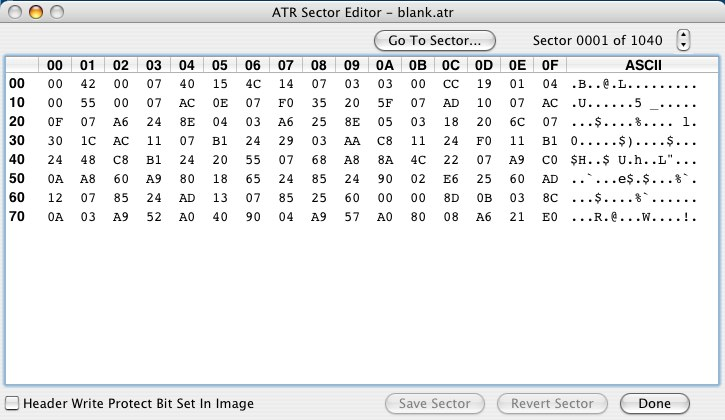

|
Atari800MacX
Help
Sector Editor
|
The Sector Editor on the Atari800MacX emulator allows you to edit a
ATR disk image at the byte level, sector by sector. You may
only open one sector editor at a time, and it runs modally when you do.
You may not open a ATR image in the sector editor that is
already open by the Disk Image editor. You can open an image
that is mounted in the emulator drive, but be
very careful if you do, as the two processes may corrupt the image.
The emualtor should not be accessing the image when you
change it. The sector editor will handle both single and double
density images, displaying the proper number of bytes per sector for
each (128 or 256). Note even a double density desk only has 128
bytes per sector for the first 3 sectors, the boot sectors.

The Sector Editor has the following elements:
Byte Editing Table
This table allows you to edit each hex
byte in the sector that is displayed. The row and column numbers
are displayed in bold, and the editable bytes in normal text. You
may edit a byte by double clicking on it, as long as the image is not
read only or protected by the header write protect bit. (If an
image is a read only file on the Mac, it will be noted as such in the
editor window title.) You can also edit the ASCII representation
of the hex bytes on the right hand side of the table. Editing one
representation will change the other automatically.
Sector Number to Edit
You can change the sector being edited
by pressing the sector stepper by the sector number either up or down,
or by pressing the Go To Sector.... button, which will display a sheet
where you enter the number. The number must be between 1 and the
number of sectors in the disk, which is displayed between the two
controls. If the sector you are currently editing has not been saved,
it will prompt you if you want to discard the changes and move to the
new sector anyway.
Saving and Reverting
You can save your editing changes to a
sector by pressing the Save button (or Cmd-S). You can discard the
changes and revert to the sector on disk by pressing the Revert button.
These buttons are only active when the sector data has been changed.
Done with editing
You can exit the editor by pressing the done button. If the sector you are currently editing has not been saved,
it will prompt you if you want to discard the changes and exit the editor anyway.
Header Write Protect Bit Set In Image
This checkbox displays the state of the Write Protect bit in the header
of the ATR image. You may change it by clicking on the
checkbox. Normally, if this is set, it will prevent the
emulator
and other programs from writing to the image. However, don't
confuse this with the permissions on the file image in the MacOSX
operating system, as they are separate.